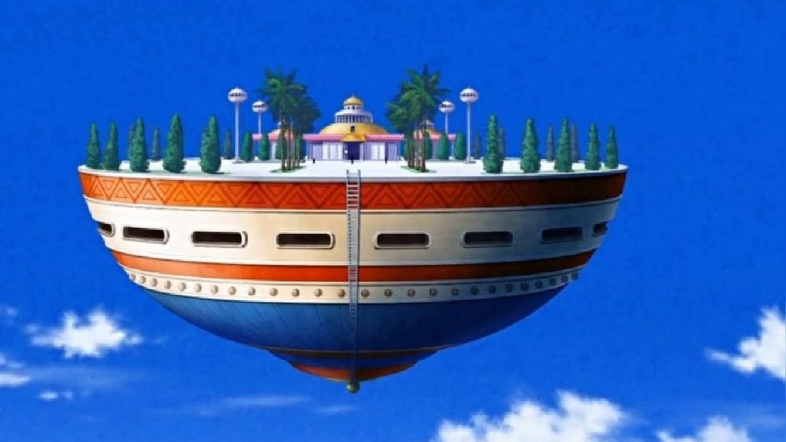

|
Goku, un guerrero Saiyajin criado en la Tierra, defiende el planeta junto a sus amigos enfrentando amenazas como los Saijayin, Freezer, los androides, Cell y Majin Buu. A lo largo de la historia, se revelan sus raíces extraterrestres y su evolución como luchador, alcanzando nuevas transformaciones como el Super Saiyajin. |
Torneo de las artes marciales.
Atalaya de Kami-Sama.
Ir a las transformaciones. Ir al cuestionario de dragon ball